Group members listed alphabetically
Andreas Haahr Larsen 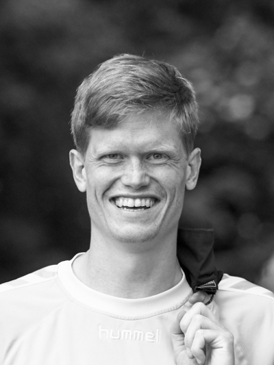
PhD student
Andreas obtained his Master's degree in physics at the Niels Bohr Institute, University of Copenhagen (2016). Andreas' PhD is part of the CoNeXT project, where he is mainly working with small-angle X-ray and neutron (SAS) experiments at large-scale facilities - from design to data analysis. His main interest lies in development of analytical tools for obtaining structural information on biomolecules with SAS and complementary techniques. Contact: andreas.larsen (at) nbi.ku.dk ORCID: 0000-0002-2230-2654
Alessandra Luchini 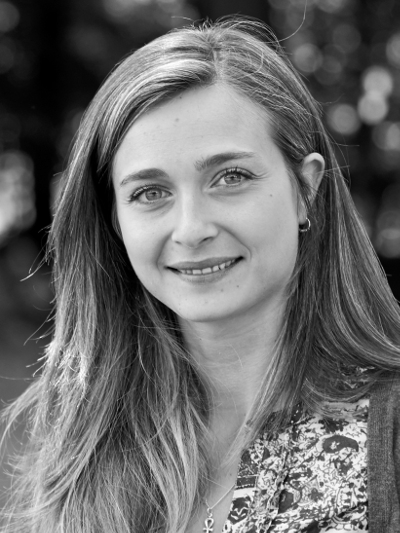
Post-doctoral researcher
Alessandra obtained her PhD degree in Physical Chemistry at the University of Naples “Federico II” (Naples, Italy) in 2016. Her work focused on the synthesis and characterization of inorganic nanoparticles and their interaction with cellular membrane models by means of Neutron Reflectometry. After the PhD, Alessandra spent 1 year at the Institute Laue-Langevin (ILL, Grenoble, France). During a part of this period, she was a beamline scientist at the FIGARO reflectometer. Currently, her main interest is in the development of a sophisticated model of cellular membranes which is able to host membrane proteins. Contact: a.luchini (at) nbi.ku.dk ORCID: 0000-0003-2380-6069
Erik Brok

Post-doctoral researcher
Erik is a physicist working as a postdoc on the LINX project. In his MSc thesis in physics from University of Copenhagen (2009) and PhD in physics from the Technical University of Denmark (2014) he used a variety of experimental techniques, in particular neutron scattering techniques, for studying the magnetic structure of magnetic nanoparticles. In a two year postdoc at the National Institute of Standards and Technology Erik worked with small angle neutron scattering of magnetic nanoparticle colloids. In the LINX project he works on solving industrial problems using small angle scattering techniques while continuing his work on magnetic nanoparticles. Contact: e.brok (at) nbi.ku.dk ORCID: 0000-0003-4377-8747
Frederik Grønbæk Tidemand 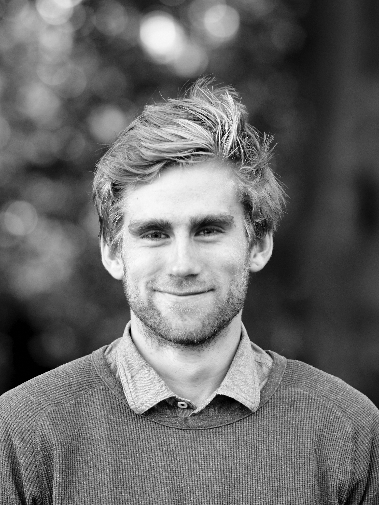
PhD student
Frederik is a PhD-student employed on the Synergy project. The focus of his work is to obtain structural information about proteins in the blood coagulation pathway. The main aim of his work is to reconstitute Tissue factor in nanodiscs, assemble the complete Tissue factor complex and obtain structural information about this using small angle scattering and NMR. Furthermore, lipid-protein and protein-protein interactions within the complex are investigated using calorimetry. Frederik has a BSc degree (2014) and a MSc degree (2016) in Biochemistry, both from the University of Copenhagen. Contact: frederik.tidemand (at) nbi.ku.dk ORCID: 0000-0001-8914-9626
Gregory Neil Smith 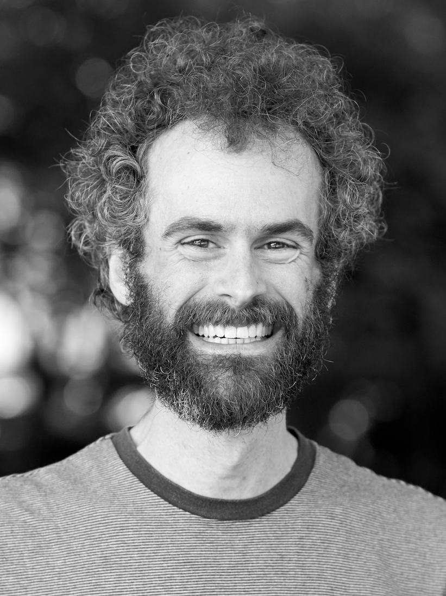
Post-doctoral researcher
Gregory is a chemical physicist, currently a postdoc on the LINX Project. In LINX, he is performs projects using small-angle neutron and X-ray scattering to study applied materials, solving problems for industrial partners. Gregory previously studied physical chemistry at the University of Bristol (UK) and graduated with a MSci with Industrial Experience in 2007 and a PhD in 2015, followed by a two-year position as a polymer chemist at the University of Sheffield (UK). In addition to his work as part of the LINX Project, his research interests generally concern the self-assembly and surface interactions of soft matter from small molecules to macromolecules and, specifically, the application of isotopic labelling and neutron techniques to colloids and soft matter. Contact: gregory.smith (at) nbi.ku.dk Orcid: 0000-0002-0074-5657
Lasse Sander Dreyer 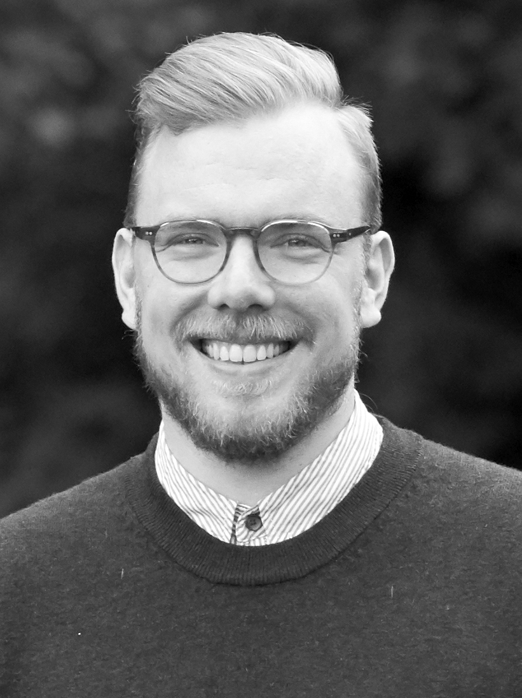
PhD student
Lasse is a biochemist and a PhD-student. He is working on obtaining time-resolved structural information on proteins as a part of the BRAINSTRUC consortium. The main aim of the project is to utilize an in-house developed continuous-flow chip in combination with a SAXS beamline, and hereby obtain time-resolved structural information on proteins. He has a BSc degree in Nanoscience (2014), and MSc in Biochemistry (2016) both from University of Copenhagen. Contact: lasse.dreyer (at) nbi.ku.dk ORCID: 0000-0001-7852-9121
Lise Arleth 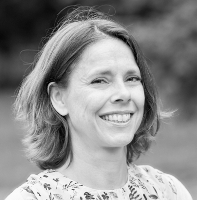
Group leader, Professor
Lise Arleth received her PhD in Physics in 2002 from Risø National Laboratory and The Royal Danish Veterinary and Agricultural University in Denmark under the supervision of Prof. Jan Skov Pedersen. She held a Post Doctoral fellowship at Lujan Neutron Scattering Center at Los Alamos National Laboratory, New Mexico, from 2002 to 2003. Since returning to Denmark in 2004, she has held academic positions at first Risø National Laboratory, then the Royal Veterinary and Agricultural University, and since 2007 at University of Copenhagen. In 2015 she was appointed professor in Experimental Biophysics at the Niels Bohr Institute at University of Copenhagen. Throughout her career, Lise Arleth has used solution small-angle scattering (X-rays and neutrons, i.e. SAXS and SANS) as her main technique for investigating various self-assembled and colloidal samples. Presently, she and her group have a special focus on developing approaches for investigating membrane proteins under solution conditions. Almost all experiments are carried out at international large scale facilities (X-ray synchrotrons and Neutron scattering facilities) in highly interdisciplinary and international scientific environments. Lise Arleth is strongly engaged in the European Spallation Source (ESS) and the Max-IV Synchrotron projects. Lise Arleth is partner in the Lundbeck Foundation funded BRAINSTRUC project, the Novo Nordisk Foundation funded Synergy project as well as the Danish Innovation Foundation funded LINX project Contact: arleth (at) nbi.ku.dk ORCID: 0000-0002-4694-4299
Martin Cramer Pedersen 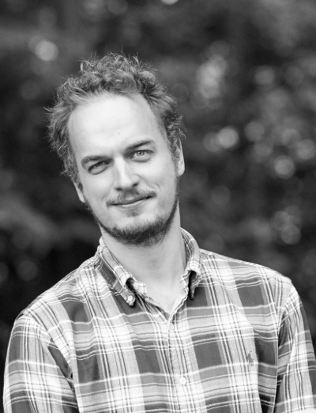
Post-doctoral researcher
Coming from a background in theoretical physics and applied mathematics, Martin's research focuses on the theory and application of scattering methods; in particular in the context of structural biology as well as colloid and polymer science. He received his Ph.D. in 2014 from the Niels Bohr Institute and spent the following two years at the Department of Applied Mathematics at the Australian National University. His interests comprise high-performance computing, Bayesian statistics, and the structure and function of various biophysical systems as well as differential geometry and topology and the mathematical and technical aspects of scattering - in particular solution-based small-angle scattering. Martin's work is funded by the Synergy- and the BRAINSTRUC-projects. Contact: mcpe (at) nbi.ku.dk ORCID: 0000-0002-8982-7615
Martin Schmiele 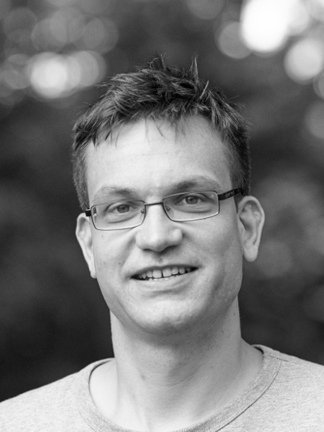
Post-doctoral researcher
Martin finished his diploma thesis in physics at the Friedrich-Schiller-University in Jena in 2009 in the at that time emerging field of transformation optics. During his PhD in Tobias Unruh's work group at the FRM-II / Technical University of Munich (2009-11), and later on at Friedrich-Alexander-University Erlangen-Nuremberg (2011-15), he studied structures in lipid soft-matter dispersions by small-angle X-ray and neutron scattering, wide-angle X-ray scattering, differential scanning calorimetry and dynamic light scattering. He used the same techniques to assist other researchers in their studies on liquid crystals, polymers and porous materials. Now he is working as a postdoc on the LINX project to analyze nanostructures with small-angle scattering in products from various Danish companies. Contact: martin.schmiele (at) nbi.ku.dk ORCID: 0000-0001-6973-3155
Nicolai Tidemand Johansen 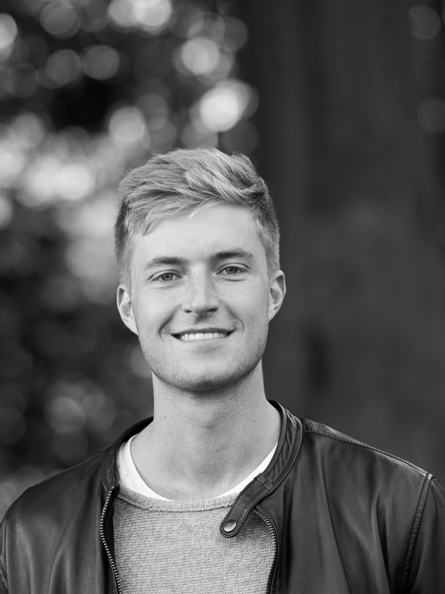
PhD student
Nicolai is a PhD student working mainly with membrane proteins and nanodiscs. Nicolai got his BSc (2013) and MSc (2015) degrees from the University of Copenhagen at the Institute of Biology, during which he worked with protein design. Currently, his main projects are involved with the development of contrast optimized nanodiscs for small angle neutron scattering, structural studies of membrane proteins in nanodiscs and detergents, and investigations on the behavior of proteins in heavy water. Nicolai has experience with several biophysical and structural techniques for protein characterization as well as protein production and purification. Contact: nicolai.johansen (at) nbi.ku.dk ORCID: 0000-0002-8596-548X
Søren Roi Midtgaard 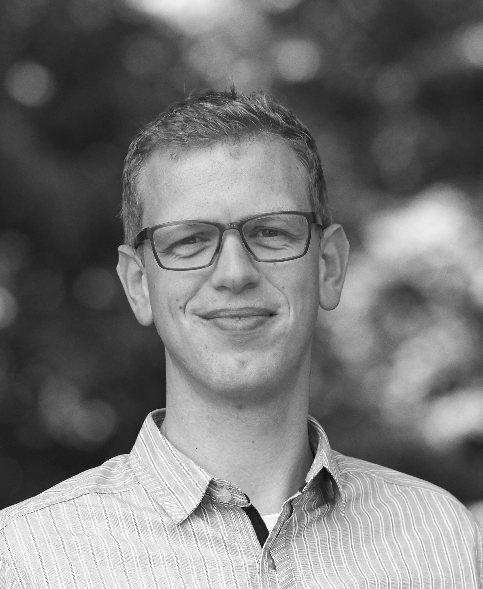
Post-doctoral researcher
Søren Roi Midtgaard is a post doctoral researcher at the Niels Bohr Institute at University of Copenhagen, Denmark. After undergraduate studies in nanoscience at University of Aarhus, Denmark Søren moved to Copenhagen to perform doctoral studies at the department of Chemistry where he was awarded the PhD degree in 2013. Søren’s main interest lies in the structural understanding of biological processes, which after initial projects centered around NMR and crystallography has led to heavy use of small-angle scattering. As especially small-angle neutron scattering (SANS) is currently under rapid development, a desire to exploit these possibilities to the fullest has led to involvement in numerous industrial and scientific collaborations. Contact: soromi (at) nbi.ku.dk ORCID: 0000-0001-6694-0626
Raul R. Araya-Secchi 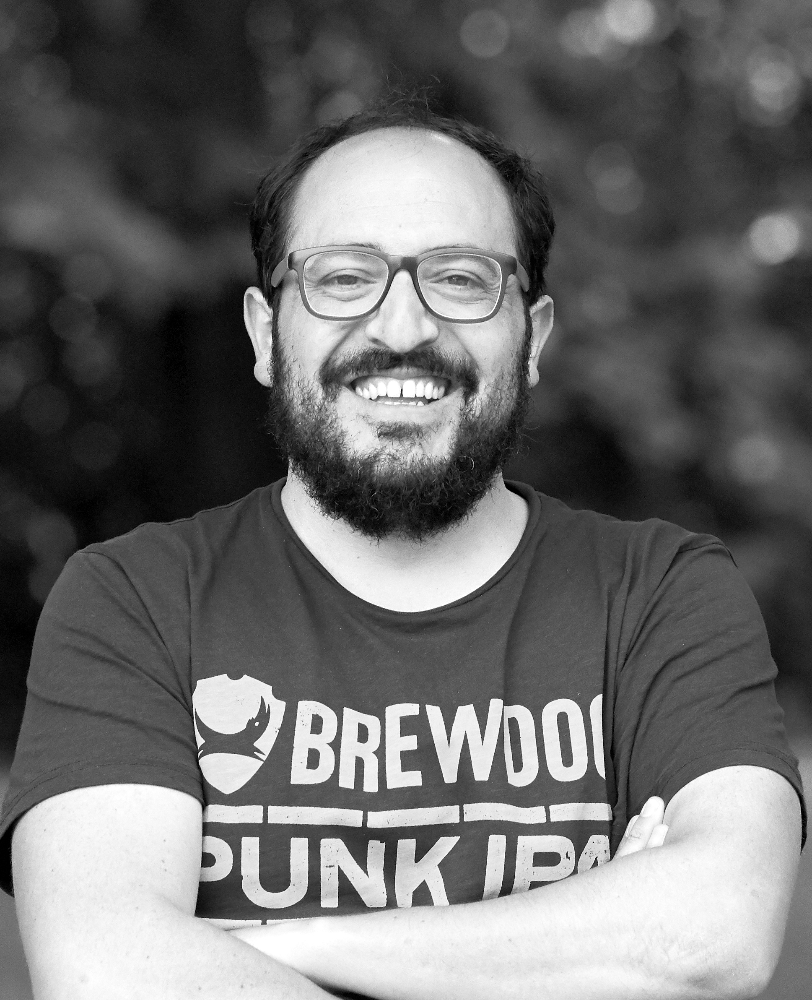
Post-doctoral researcher
Raul is working as a postdoc in the SYNERGY and BRAINSTRUC projects. He obtained his PhD in Biotechnology in Chile (2013) working on the study of the dynamics of water molecules inside the Gap-Junction channel using Molecular Dynamics (MD) simulations. From 2014 to 2016 he worked as a postdoc in the group of Prof. Marcos Sotomayor at The Ohio State University where he used X-ray crystallography, SAXS and MD simulations to study the structure and mechanical properties of inner-ear cadherins. In the SYNERGY and BRAINSTRUC projects he is using MD simulations to study membrane proteins and the effects of lipid composition on protein structure and function and in the development of tools that use the results of MD simulations to better interpret and model SAXS data. Contact: raul.secchi (at) nbi.ku.dk ORCID: 0000-0002-4872-3553